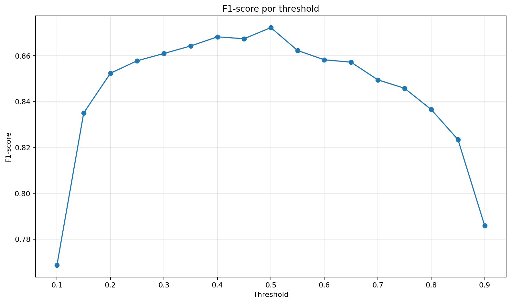
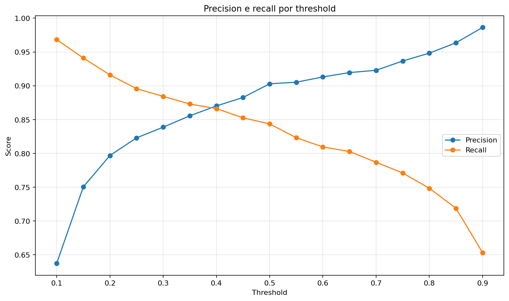
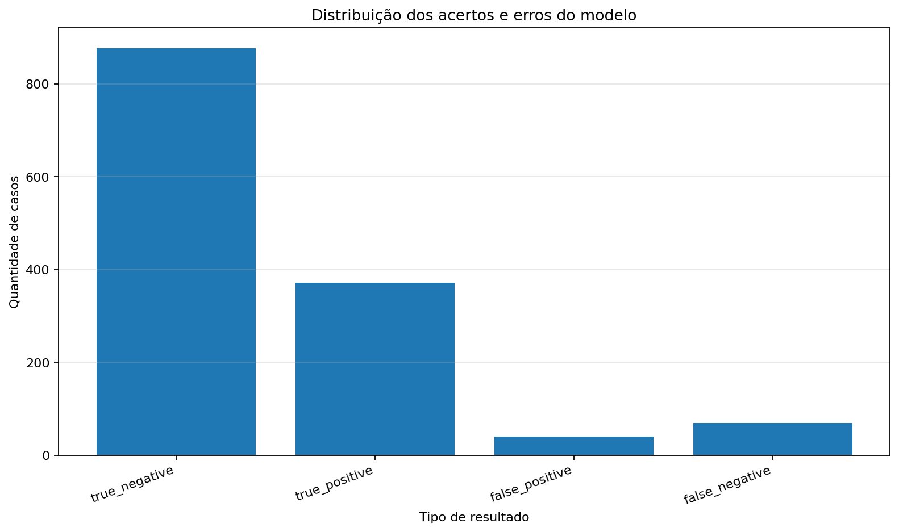
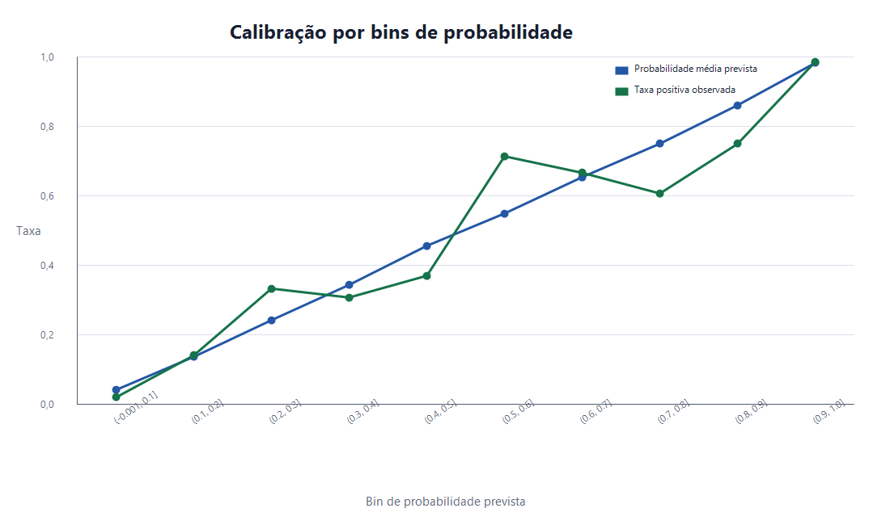
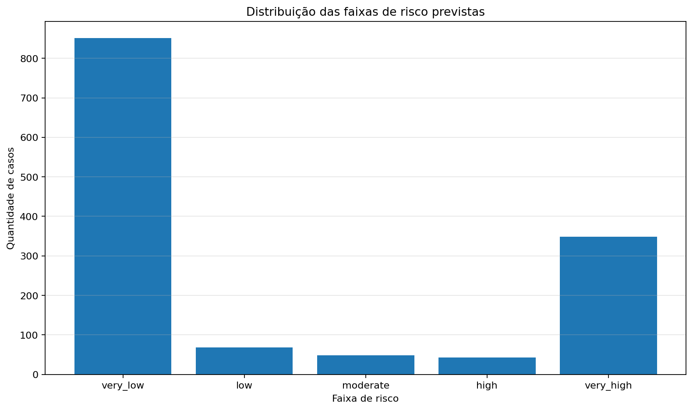
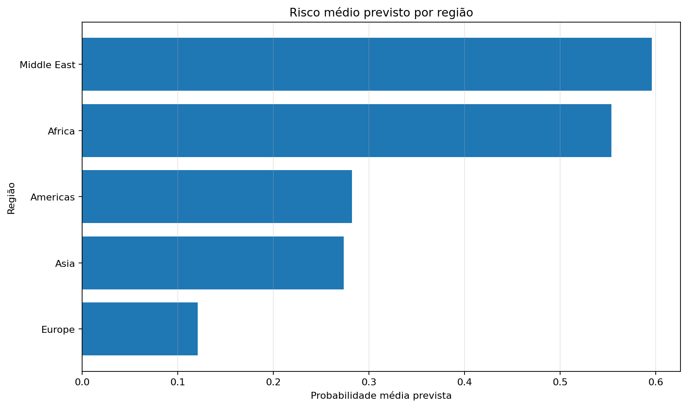
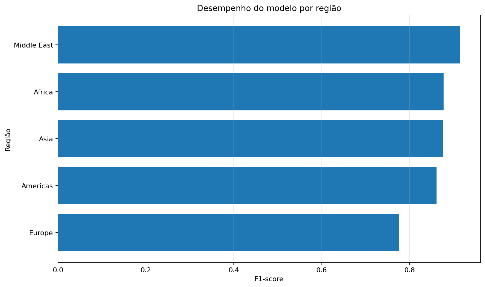
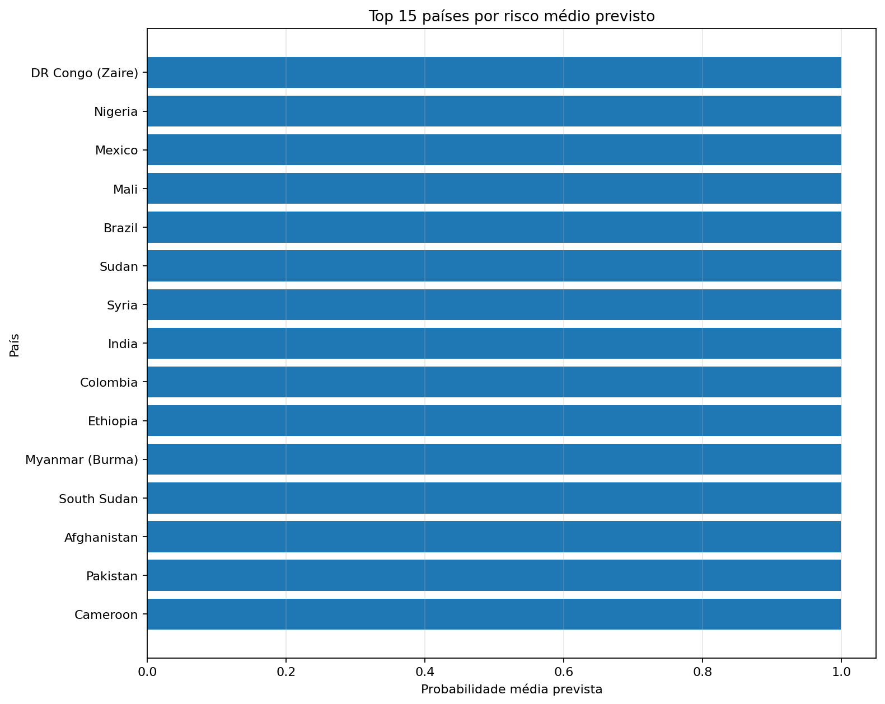
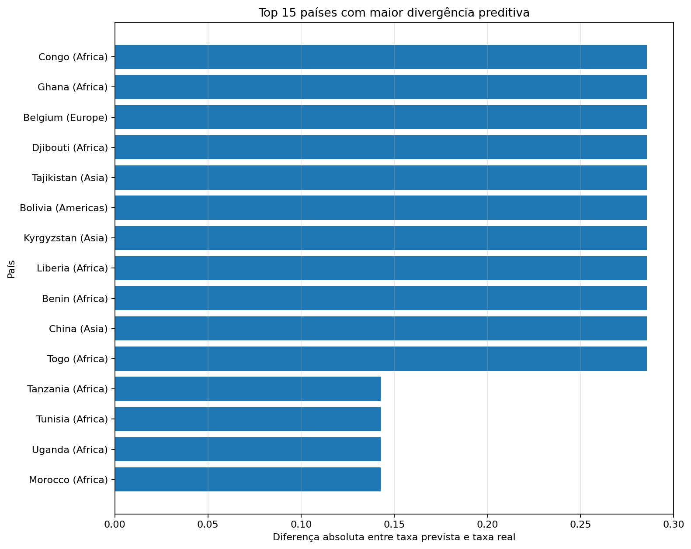
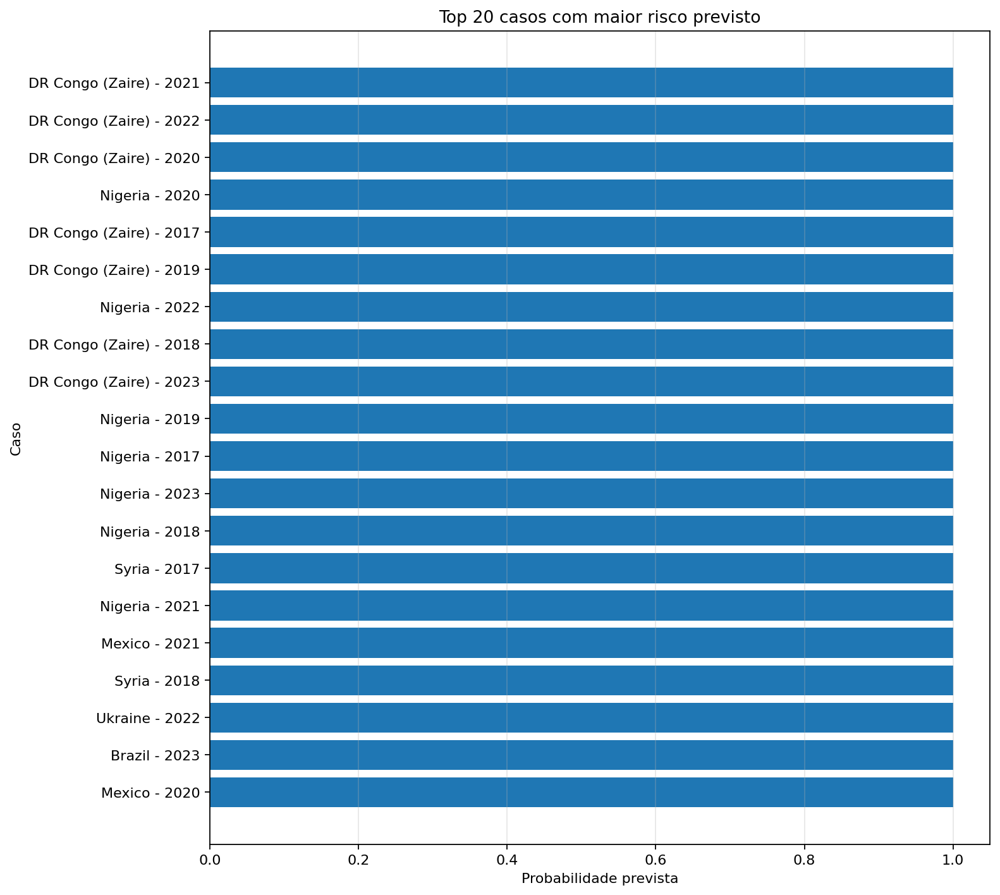

GitHub Pages dashboard · projeto acadêmico de Machine Learning
Análise preditiva de violência organizada em estrutura country-year
Pipeline experimental e reproduzível para estimar se um país apresentará violência organizada no ano seguinte, usando UCDP Organized Violence, features temporais e indicadores brutos do World Bank.
Pipeline oficial atual
UCDP + features temporais + World Bank raw + Logistic Regression
A unidade oficial de análise é country-year. O target é
target_conflict_next_year, avaliado com split temporal e sempre comparado à baseline de persistência.
1UCDP raw
Organized Violence Country-Year preservado em data/raw.
2Dataset base
Criação de organized_violence_exists e target t+1.
3Features temporais
Persistência, mortes recentes e anos desde último conflito.
4World Bank raw
10 indicadores socioeconômicos em estrutura país-ano.
5Treino temporal
Treino 1989-2016; teste 2017-2023.
6Outputs
Métricas, predições, modelo, coeficientes e relatórios.
Governança de dados
Datasets oficiais, candidatos, experimentais e suporte bruto
A auditoria evita integrar fontes heterogêneas sem chave temporal, chave geográfica e justificativa metodológica.
Resumo auditado: 35 datasets em outputs/tables/dataset_integration_summary.json.
Oficiais
Papel: sustentam o pipeline oficial UCDP + temporal + World Bank.
Exemplos: UCDP processado, datasets conflict_country_year_* e World Bank processado.
Unidade: principalmente country-year. Entra no pipeline: sim.
Candidatos
Papel: possíveis expansões, como SIPRI, PRIO, GDP, inflação e juros.
Unidade: em geral country-year. Entra no pipeline: não automaticamente.
Limitação: exigem validação de chaves, cobertura, nulos, duplicatas e perda de linhas.
Experimentais
Papel: frentes paralelas para exploração metodológica.
Exemplos: UCDP One-Sided Violence, WWI e WWII.
Unidade: actor-country-year ou event-country-year. Entra no pipeline: não no estado atual.
Suporte/raw
Papel: rastreabilidade dos dados brutos e fontes originais.
Exemplos: arquivos raw World Bank, UCDP raw, PRIO/UCDP raw.
Limitação: alguns arquivos são não tabulares ou precisam de parser específico.
Não prontos/rejeitados
Papel: não devem ser integrados sem tratamento adicional.
Exemplos: mapeamentos sem ano e arquivo raw SIPRI vazio na auditoria.
Entra no pipeline: não.
Distribuição por decisão
Fontes mais frequentes
Unidade detectada
Resultado oficial
Modelo principal supera a persistência, mas com ganho moderado
Logistic Regression scaled - World Bank all raw
F1 0.8722
Accuracy 0.9197 · Precision 0.9029 · Recall 0.8435 · 33 features
Persistence baseline
F1 0.8571
y_pred = organized_violence_exists
Comparação de modelos candidatos
| Modelo | Accuracy | Precision | Recall | F1 | Δ F1 |
|---|---|---|---|---|---|
| Logistic Regression | 0.9197 | 0.9029 | 0.8435 | 0.8722 | +0.0151 |
| Random Forest | 0.9124 | 0.8594 | 0.8730 | 0.8661 | +0.0090 |
| Gradient Boosting | 0.9138 | 0.9197 | 0.8050 | 0.8585 | +0.0014 |
| Persistence baseline | 0.9072 | 0.8571 | 0.8571 | 0.8571 | 0.0000 |
| MLP | 0.9094 | 0.9206 | 0.7891 | 0.8498 | -0.0073 |
Ver detalhes metodológicos do modelo oficial
Por que Logistic Regression?
Foi escolhida por combinar melhor F1-score, estabilidade, simplicidade e interpretabilidade dos coeficientes. Isso é importante em um projeto acadêmico, onde a comparação metodológica pesa tanto quanto o desempenho bruto.
Comparação com baseline
A baseline de persistência já é forte: F1 0.8571. O modelo oficial chega a 0.8722, ganho moderado de +0.0151. O resultado é incremental, não uma promessa de previsão forte.
Por que não Random Forest?
Teve recall maior (0.8730), mas menor precision e F1 inferior. Pode ser útil como modelo mais sensível, mas não substitui o principal.
Por que não Gradient Boosting/MLP?
Gradient Boosting foi mais conservador, com recall menor. A MLP simples ficou abaixo da baseline, então não trouxe ganho metodológico neste estágio.
Baseline
TN 854 · FP 63 · FN 63 · TP 378
Modelo oficial
TN 877 · FP 40 · FN 69 · TP 372
Análise probabilística
Thresholds, calibração preliminar e cautela interpretativa
As probabilidades são estimativas experimentais. Elas não devem ser lidas como previsão determinística de eventos geopolíticos.
Threshold oficial 0.50
Melhor F1 na grade testada: 0.8722. Mantém maior precisão e reduz falsos positivos.
Threshold alternativo 0.40
Recall maior: 0.8662. Útil para leitura mais sensível, com mais falsos positivos.
| Threshold | Precision | Recall | F1 | Uso interpretativo |
|---|---|---|---|---|
| 0.40 | 0.8702 | 0.8662 | 0.8682 | Mais sensível |
| 0.50 | 0.9029 | 0.8435 | 0.8722 | Oficial atual |
| 0.60 | 0.9130 | 0.8095 | 0.8582 | Mais conservador |
Resumo de calibração
Os extremos apresentaram boa aderência: o bin 0.9-1.0 teve probabilidade média 0.9831
e taxa observada 0.9863. Bins intermediários foram menos estáveis, como 0.5-0.6
e 0.7-0.8, exigindo cautela antes de tratar probabilidades como risco calibrado.
Country risk assessment
Risk bands para 194 países no ano-base 2023
média 0.0558
média 0.2716
média 0.4678
média 0.7183
média 0.9507
59 países foram classificados como
high ou very_high; destes,
54 ficaram em very_high. Essas faixas são uma camada interpretativa do modelo,
não uma afirmação causal ou operacional.
Top países por probabilidade no assessment 2023 → 2024
- DR Congo (Zaire)100.0% · very_high · true positive
- Nigeria100.0% · very_high · true positive
- Brazil100.0% · very_high · true positive
- Ukraine100.0% · very_high · true positive
- Mexico100.0% · very_high · true positive
Exemplos de erros do teste temporal
Liberia 2019, Congo 2018, Peru 2018, Rwanda 2020 e Lebanon 2019 ficaram abaixo do threshold, mas tiveram target positivo.
Rwanda 2022, Tanzania 2022, Egypt 2023, Congo 2020 e Tunisia 2023 foram previstos como positivos, mas o target observado foi 0.
Como ler esta seção
Os países listados são exemplos de maior probabilidade estimada ou de erro no conjunto de teste. A camada é interpretativa e probabilística; ela não afirma causalidade nem previsão determinística.
Visualizações existentes
Gráficos preditivos integrados ao dashboard
Os gráficos abaixo são gerados por src/visualization/generate_predictive_charts.py e publicados em docs/assets/charts/predictive_analysis/.
a) Thresholds


b) Calibração/probabilidade


A calibração compara a probabilidade média prevista com a taxa positiva observada por faixa de probabilidade.
c) Risk bands

d) Regiões


e) Países/top cases



Módulos experimentais e paralelos
Expansões preservadas, mas separadas do resultado oficial
SIPRI
Fonte candidata/apoio; ainda não substitui nem altera o modelo principal.
PRIO
Fonte candidata em revisão; requer validação de chaves, cobertura e perda de linhas.
WWI/WWII
Módulo histórico experimental com granularidade e target diferentes.
One-sided violence
Frente complementar que deve ser comparada às variáveis one-sided já presentes na UCDP oficial.
Shock features
Experimento não oficial; F1 0.8709, abaixo do modelo oficial 0.8722.
Global inflation
Indicador/feature de suporte, não resultado principal separado.
Limitações metodológicas
Como interpretar o projeto sem overclaim
- O modelo estima risco em nível país-ano; não prevê guerras mundiais.
- O ganho sobre a baseline é real, mas pequeno/moderado.
- Coeficientes indicam associação dentro do modelo, não causalidade.
- Indicadores externos podem ter atraso, lacunas e problemas de cobertura.
- Risk bands são uma camada interpretativa, não uma classificação operacional calibrada.
Documentação